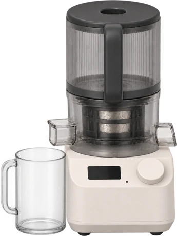
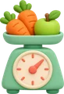
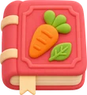

재미있게 알게 돼요
레시피 재료가 게임의 목표가 돼요. 풍선을 터뜨리고 과일을 받으면서, 이 주스에 무엇이 들어가는지 자연스럽게 보게 돼요.
팡팡! 풍선 터뜨리기 · 레시피 재료가 든 풍선만 톡 눌러요
놀러와 휴롬팜 · 모바일 레시피 놀이터
휴롬 주스 레시피 60가지를 미니게임 46가지로 만나요. 재료를 고르고, 받고, 썰고, 짜다 보면 어떤 주스에 무엇이 몇 개 들어가는지 손이 먼저 기억해요.
설치 없이 휴대폰 브라우저에서 바로 시작해요.
셀러리 한 가지만 짠 가장 간단한 주스예요.
오늘 짠 주스 0잔

이 게임이 하는 일
레시피 재료가 게임의 목표가 돼요. 풍선을 터뜨리고 과일을 받으면서, 이 주스에 무엇이 들어가는지 자연스럽게 보게 돼요.
팡팡! 풍선 터뜨리기 · 레시피 재료가 든 풍선만 톡 눌러요

재료의 개수와 순서가 곧 게임 규칙이에요. 틀린 재료를 고르면 감점되니, 레시피를 정확히 알아야 이길 수 있어요.
딱! 레시피 저울 · 적힌 개수만큼 올려야 통과해요

단계를 하나 깰 때마다 새 레시피가 열리고, 익힌 레시피는 레시피북에 차곡차곡 모여요. 영양 포인트도 함께 알려줘요.
휴롬 레시피북 · 12개 스테이지에서 60가지를 수집해요
한 판의 흐름
아래 영상은 모두 실제 게임 화면을 녹화한 거예요.
단계를 누르면 먼저 레시피 카드가 나와요. 주스 이름, 들어가는 재료와 개수, 이번 게임 방법을 한눈에 봐요.
레시피 재료만 썰고, 받고, 터뜨려요. 레시피에 없는 재료를 건드리면 점수가 깎여서, 무엇이 들어가는지 집중하게 돼요.
게임이 끝나면 완성된 주스와 함께 '오늘 익힌 레시피'를 한 번 더 보여줘요. 재료와 영양 포인트를 정리해서 기억에 남겨요.
익힌 레시피는 레시피북에 쌓여요. 재료별로 어떤 레시피에 쓰이는지, 영어 이름과 영양 포인트까지 언제든 다시 볼 수 있어요.
미니게임 46가지
게임 밖으로 이어지는 놀이
게임에서 얻은 씨앗으로 내 농장을 가꾸고, 모두의 농장에서 다른 사람들과 만나요. 레시피 재료가 생활 속 이야기가 돼요.
당근, 사과, 비트, 케일을 심고 물을 주고 거둬요. 계절이 바뀌고, 착즙장에서는 수확한 재료로 직접 주스를 짜요.
다른 사람들과 같은 광장에서 만나 인사하고, 미니게임 대결을 하고, 재료를 선물해요. 다 함께 주스 축제 탱크도 채워요.
노력이 진짜 선물이 돼요
게임에서 익힌 레시피는 실제 휴롬 주스키트로 이어져요. 단계를 깨고 농장을 가꾼 만큼 키트가 채워져요.
미니게임에서 주스와 씨앗을 모아요.
사과, 당근, 케일, 비트, 자몽, 레몬을 수확해요.
출하장의 주스키트 메뉴에서 필요한 재료를 담아 키트를 완성해요.
완성한 주스키트는 사은품으로 받을 수 있어요.
실제 사은품의 수령 방법, 기간, 수량은 추후 안내해 드려요. 위 키트 구성은 게임 안에서 완성할 수 있는 키트예요.